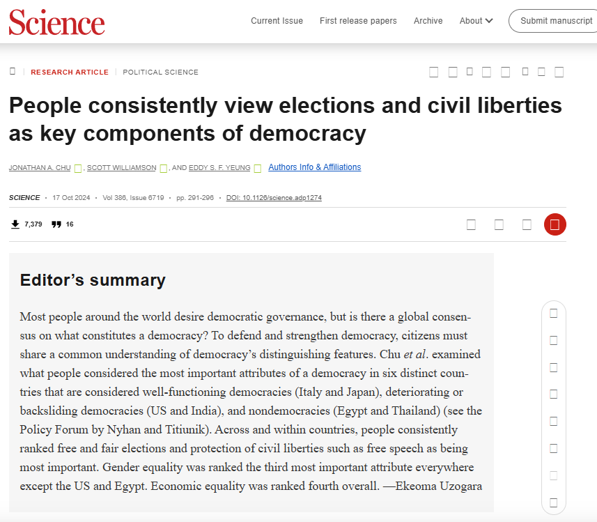

Weakening Vertical Accountability
The Politics of Democratic Backsliding
Session 05
University of Lucerne
Introduction
Elections and democracy

Backsliding and accountability
- Horizontal accountability: state institutions checking each other; courts, legislatures, oversight agencies
- Horizontal accountability erodes through apparently legal, legitimized and incremental steps: capturing courts, prosecuting opponents, dismantling legislative oversight, changing the rules of the game
- The result is that the executive power concentrates and the playing field tilts
But this picture leaves out the role of citizens… so what about vertical accountability?
This session’s goals
- Understand vertical accountability and its mechanisms
- Explore how would-be autocrats weaken vertical accountability
- Discuss the implications for democratic backsliding
- Students’ presentation: the case of Turkey
Vertical accountability
Defining vertical accountability
Vertical accountability: the capacity of citizens to punish or reward politicians for their performance
The dominant mechanism is voting, but not the only one:
- Elections (retrospective and prospective)
- Protest and collective action
- Civil society organizations
- Media scrutiny
Economic voting theory
If elections work as an accountability mechanism, voters should sanction governments for poor performance
Retrospective voting: citizens evaluate incumbents on past record; above all, economic conditions
“It’s the economy, stupid”
Indirect effects: the threat of electoral punishment gives governments incentives to perform competently, select capable candidates and choose policies that satisfies the median voter
Mechanisms of vertical accountability
Voting
Select and sanction politicians at regular intervals
Protest and collective action
Express dissent and pressure governments between elections
Civil society organizations
Monitor, advocate, and organize on behalf of citizens
Media scrutiny
Inform citizens and expose government performance and wrongdoing
The conditions vertical accountability
Vertical accountability depends on a broader institutional ecosystem
Political rights
- Freedom of speech
- Freedom of assembly
- Freedom of organization
Media
- Freedom of the press
- Diversity of ownership
- Access to information
Only under these conditions, citizens can meaningfully hold governments accountable
Vertical accountability and democracy
Remember Dahl’s notion of democracy:
Contestation
Can opposition meaningfully compete?
Participation
Who gets to take part?
How does (vertical) accountability relate to this conception of democracy?
Weakening vertical accountability
How to weaken vertical accountability?
A non-exhaustive list
- Voter registration laws: restrict who can access the ballot
- Election integrity: undermine the impartiality of electoral administration
- Media capture: control the information environment citizens rely on
- Civil society repression: restrict the capacity to organize, protest, and advocate
Voter registration laws
A fundamental prerequisite for vertical accountability: who can vote
Registration laws determine access to the ballot:
- Photo identification requirements
- Proof of citizenship
- Registration requirements for non-residents
- Reduction of early voting and same-day registration
- Restrictions on voting by felons
Any other example?
Jim Crow 2.0?
Bentele & O’Brien, 2013
Research question: what drives the proposal and passage of restrictive voter access laws in US states (2006–2011)?
Data: all restrictive voter access provisions introduced in state legislatures across 50 states
Method: specialized regression models for count and passage outcomes
Three competing explanations:
Voter fraud concerns
Partisan advantage
Targeted demobilization of minority voters
Findings: partisan, strategic, racialized
Bentele & O’Brien, 2013
Fraud concerns: do not predict proposal or passage
Partisan control: Republican-controlled legislatures are far more likely to pass restrictive legislation
Minority turnout: states with higher minority turnout – especially African American – see more restrictive proposals and passage
Turnout gains: states that saw increases in minority turnout between 2004 and 2008 also see more restrictive legislation
Findings are consistent with targeted demobilization as the central driver
Your responses
“The evidence makes the partisan and racial associations difficult to dismiss, but it does not fully prove the motives behind them.” (Nikolina Djogova)
“the paper sometimes treats too many different policies as if they all follow one unified logic […] Some may be more symbolic, some more targeted, and some easier to defend publicly under the language of administrative integrity.” (Nikolina Djogova)
“the paper could go further in addressing the possibility that some lawmakers may have sincerely understood these reforms as election-integrity measures, even if those beliefs were politically selective, exaggerated, or ultimately harmful.” (Nikolina Djogova)
Implications beyond the US?
The US case illustrates a general logic: electoral rules are politically contested terrain
Across backsliding cases, incumbents manipulate who can vote and how:
- (Dis)enfranchisement of diaspora voters (Turkey: overseas votes excluded until 2014)
- Gerrymandering to dilute opposition strongholds
- Electoral system changes converting pluralities into supermajorities (Turkey 2002, Hungary 2010)
The key insight: formal democratic procedures can be used to undermine accountability
Electoral integrity
Even if access to the vote is preserved, elections may not be free and fair
Recall Bermeo (2016): modern backsliding is less about blatant fraud, more about subtle manipulation
But electoral integrity – the absence of irregularities in the conduct of elections – remains a core dimension
- Vote buying, government intimidation, electoral violence
- Manipulation of electoral management bodies (EMBs)
- Selective enforcement of campaign finance rules
Getting away with foul play?
Birch & Van Ham, 2017
Research question: when are elections most likely to be free and fair?
Data: 1,047 national elections in 156 electoral regimes, 1990–2012
Dependent variable: V-Dem electoral integrity index
Core argument: independent EMB independence is important but insufficient
Deficiencies in electoral management can be compensated by alternative institutional checks:
- Independent judiciary
- Independent media
- Active civil society
Four checks on electoral conduct
Birch & Van Ham, 2017
Flawed elections are most likely when all four checks fail simultaneously:
Formal
Electoral Management Body (EMB)
De jure and de facto independence
Informal
Independent judiciary
Independent media
Active civil society
Substitution effect: strong informal checks can compensate for weak formal ones – and vice versa
Media as a connector
Media is central to both sides of accountability:
- Horizontal: media reports on government performance, exposes wrongdoing, frames public debate
- Vertical: citizens rely on media to form preferences, assess politicians, coordinate action
Capturing or skewing media does not require censorship
Ownership concentration and sidelining suffices
How the ultrarich use media ownership
Grossman, Margalit & Mitts, 2022
Research question: can the ultrarich shape electoral results by controlling media outlets?
Argument: slanted media can persuade voters outside its ideological base when easily accessible and in a concentrated media market
Case: Sheldon Adelson’s Israel Hayom – launched 2007, distributed free of charge, rapidly became the most widely read national newspaper
Method: local media exposure data matched to electoral returns since launch
Findings: market capture and persuasion
Grossman, Margalit & Mitts, 2022
Key findings:
- Israel Hayom carried significantly stronger right-wing slant and more positive coverage of Netanyahu/Likud – especially on front pages
- Exposure had a significant causal effect on vote share for the Likud and the right bloc
Implication: media capture does not require censorship; ownership concentration by politically motivated actors suffices
Media capture and backsliding
The Israel Hayom case illustrates a general mechanism visible across backsliding cases:
- Turkey: Erdoğan allies acquired major media outlets; Doğan Media Group sold under regulatory pressure
- Hungary: pro-Orbán businessmen consolidated ~500 outlets into a single foundation (KESMA, 2018)
- Peru: Montesinos paid TV networks directly to control news content
The result: formal press freedom preserved, substantive media diversity eliminated
Other participation mechanisms
Vertical accountability operates between elections through:
- Protest and collective action: citizens mobilize to express dissent and pressure governments
- Freedom of association: civil society organizations monitor, advocate, and organize
- Direct democracy: referenda, citizens’ initiatives (can be manipulated for plebiscitarian purposes; rare in most democracies)
These mechanisms depend on civic space: the freedom to assemble, associate, and speak
Global attack on civic space
UN Human Rights Council, 2024
Report of the Special Rapporteur on freedom of peaceful assembly and association (Voule, 2024)
Documents a systematic and global assault on civic space, particularly since 2010:
- Restrictive laws: broad and ambiguous definitions used to silence civil society organizations; justified through national security frameworks
- “Foreign agent” laws: associations receiving foreign funding required to register as foreign agents, face burdensome reporting and stigmatization (Russia, Georgia, Kyrgyzstan, Hungary)
- Digital repression: surveillance, internet shutdowns, misuse of technology to monitor and deter protest
Conclusion
Vertical and horizontal accountability
How does weakening vertical accountability differ from weakening horizontal accountability?
How may they interact?
And what does it mean for democratic backsliding?
Summary
- Vertical accountability: citizens hold governments to account through elections, protest, media, and civil society
- Elections alone are insufficient: the full ecosystem of political rights, media freedom, and civic space is required
- Vertical accountability can be weakened through any of its mechanisms: voter access laws, electoral management bodies, media capture, and civil society repression
- Vertical and horizontal accountability erode together and in interaction, incrementally hollowing out democracy

Next session (13:45)
Session 06: Weakening Democratic Norms
Case study: India
Before…
Presentation by Dillen:
Turkey
Thanks! 🙂
Hauptseminar - Spring Term 2026